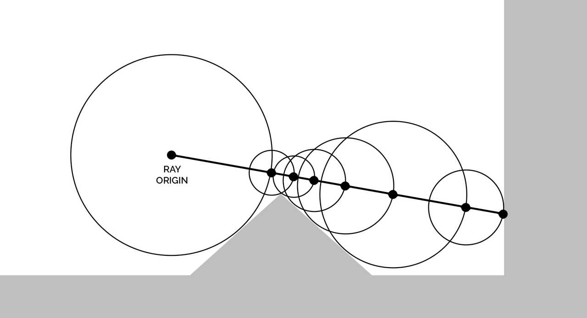
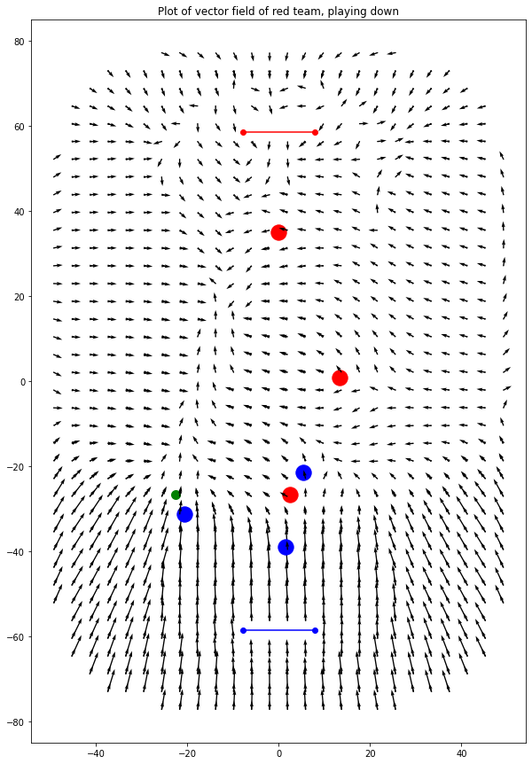

Introduction
Earlier in the year I developed the AI for Slapshot: Rebound: A physics-based, fast paced icehockey game. The bots navigate the rink, pass and shoot. They have human-like reaction times, and can play together as a team or drop in as a replacement should a player disconnect in an online match.
In this part I'll show how I used some fancy math to perform some lookups much faster than I've seen elsewhere.
Something that came up repeatedly is 'how far is this point from the edge?'. I wanted to move bots away from the edges to put them in the action, and bots needed to know if the puck was near the edge so they could approach it correctly. Additionally, it was important to quickly check points were in bounds, so the bots weren't attempting to walk into the wall.
The problem surfaces again when considering more advanced behaviours: The bots simulate puck rebounds off the rink and goals, and predict accordingly. Knowing where and when the puck would collide is a difficult problem.
It's possible to use lots of raycasts to check for nearby obsticles, but this gets expensive. For predicting puck paths, the solution used by the open source Rocket League Bots I looked it is to use a full physics engine: Bullet, to occasionally simulate the ball path and interaction with objects. This is very accurate, but it's slow and complicated.
Instead, I used an idea from graphics: Signed Distance Functions. It's much faster, and (approximately) handles all of the above in just a few cpu cycles.
What is a Signed Distance Function?
The idea of a signed distance field is to provide a function \(f(\vec{p}) = d\) which gives the distance from some point \(p\) to a surface.
The signed distance function (SDF) for a circle of radius \(r\) centered on the origin is:
\[ \mathit{sdf\_circle}(\vec{p}) = \lVert \vec{p} \rVert - \vec{r}; \]
This is shown in Plot 1, below. Click and drag to pan, scroll to zoom.
Plot 1: The signed distance function for a circle with radius 1. The function is negative inside the shape, and positive elsewhere. Where the function is 0 denotes the perimiter of the cicle.
Where things get interesting though is combining SDFs. You can take the \(min\) of two functions to find the intersection of two shapes, and \(max\) to find the union.
You can also negate a function to find the inverse of the shape: To find the shape cut into a plane.
By combining these, it's also possible to subtract one shape from another, for example subtracting a circle from a square.
First, the SDF for a rectangle:
\[ \begin{aligned} \mathit{sdf\_box}(p) &= \max(\vec{v}, \vec{0}) + \min(\max(\vec{v}_x, \vec{v}_y), 0) \\ \text{where } b &\text{ is bounds of the box},\\ \max(\vec{v}) &\text{ is the element-wise minimum of a vector},\\ \text{abs} &\text{ is the element-wise absolute value of a vector},\\ v &= \text{abs}(p) - \frac{b}{2} \\ \end{aligned}\notag \]
Or, more intuitively, written in GLSL:
float sdf_box(in vec2 p, in vec2 b)
{
vec2 v = abs(p)-b;
return length(max(v, 0.0)) + min(max(v.x, v.y), 0.0);
}
Then the combined equation, including translating the circle for subtraction is:
\[ \mathit{sdf\_eg}(p) = \min(\mathit{sdf\_box}(p), -\mathit{sdf\_circle}(p - 1)) \]
Which gives the following shape: A square with a circle cut out of the top corner.
Plot 2: A SDF of a square missing a corner. Once again, the shape is bounded by where the function is 0.
It's worth noting SDFs work equally well in 3D as well as 2D. Inigo Quilez has compiled a list of useful SDFs in 3D as well as in 2D which I've constantly used for reference. He's also created some incredible art using SDFs which you can see on shadertoy. His work has been a big inspiration for me too, check it out!
A Slapshot SDF:
Onto something more useful… A signed distance function for the slapshot rink. This combines a rounded square for the outer perimiter with a capsule for each goal.
Plot 3: A SDF of the Slapshot: Rebound ice rink.
Gradients, normals and nearest points
As we know, the SDF(p) gives the distance from p to some surface. What's less intuitive is that the derivitive of the SDF gives the direction from p to that surface. If you're familiar with gradient descent - that's exactly what's going on here. We can follow the direction of the steepest slope to reach our surface.
In a more mathy term we can write the gradient at a point p as: \[ \text{grad} f = \nabla f = \langle \frac{\partial f}{\partial x}, \frac{\partial f}{\partial y} \rangle \] Which is essentially saying the gradient is a vector defined by the partial derivitives in each axis.
In some cases it's possbile to work these out emperically, but that's challenging for more complicated examples. Instead, we sample a couple of points nearby and calculate the gradient from those.
\[ \frac{\partial f}{\partial x} \approx \frac{(f(p + k*\vec{x}) - f(p - k*\vec{x}))}{2k} \]
This is known as the symmetric derivitive when taken as the limit as \(k\) tends to \(0\)
Taking a smaller k theoretically gives more accurate results, but in reality you run into numeric precision issues. For Slapshot we sample 4 points that are .5 units in each direction.
A nice property of this is that we can calculate surface normals and tangents for free. The normals are simply the gradient at some point on the surface, and the tangents are orthagonal to that. This is useful for calculating how to approach a puck near the edge, but in other cases it's useful for calculating lighting of objects for example.
Nearest points
What's the nearest point on a surface? It's simply the direction to the nearest point times the distance. We know both of those, so we can plug them in.
\[ p_{surface} = \nabla f(p) * f(p) \]
Ray intersection (raymarching)
When does a ray intersect with a SDF surface? Raymarching is an itterative process. Given a ray origin and direction, you advance along the ray until you've reached a given number of iterations. How do you know how far along the ray you can advance? Well, there's one simple observation: The intersection point can't be closer than the nearest point, and we know the distance to the nearest point - we just evaluate the SDF.

Figure 1: The calculation at each iteration of raymarching. Credit: Wikipedia.
We start off at a point: the ray origin, then evaluate the SDF. If the resulting distance is smaller than some error value, we're already at an edge. Otherwise, we update that point to be point + distance*ray\direction. It's easy to give the ray some thickness by subtracting the radius from the raw distance, too.
Puck physics
Along with some simple physics (i.e. restution and drag) calculations, raymarching is a fast way to calculate where the puck will be in a given amount of time. We use this to calculate where the puck will be some time in the future on each frame. The bots are only given previous predictions as input, which gives them an effective reaction time and makes them play much more human-like!
One slight got'cha is that if the ray origin is very close to the wall, you spend lots of iterations making little headway. We simply say that the puck isn't likely to collide again within a small distance after a collision with the wall, and so begin raymarching a small distance after this has taken place.
This is all extremely fast in code: The bots can each calculate puck predictions for up to 15 seconds into the future on every iteration of the 120hz servers, without breaking a sweat. It would be nice to cache predictions and only recalculate upon collisions, but it's not worth it.
Misc…
Some other uses for this…
Randomness
Sometimes it's useful to pick a random point in the pitch… Simple! Just loop until we find one. This succeeds on the first try a vast majority of times.
public static Vector2 RandomPointInRink(float minDistToEdge=0) {
Vector2 p;
do {
p = new Vector2(
Random.Range(-Constants.PITCH_X_EXTENTS2, Constants.PITCH_X_EXTENTS2),
Random.Range(-Constants.PITCH_Y_EXTENTS2, Constants.PITCH_Y_EXTENTS2));
} while (DistanceToEdgeOfRink(p, minDistToEdge) < 0);
return p;
}
Player posturing
I might write a different post on this, but the bots use these distances to decide where they should stand.
As a quick teaser… This shows 3 members of the red team (red dots, playing downward), and 3 members of the blue team (blue dots, playing upward). The puck (green dot) is being controled by a member of the blue team. The arrows show, if there was a 4th member of the red team standing somewhere on the pitch, which direction it would be moving in.

Figure 2: How a 4th member of the red team would move from it's current position.
For example, a member of the red team standing near the blue goal would be rapidly trying to make it's way back up the pitch. That's because the bots really don't 'like' being in front of the puck when the enemy team has possession of it. You can also see between the puck and red goal, there are lots of arrows which converge. This is because bots 'like' standing between the puck and the goal.
Conclusion
This has been part 1 of a series talking about the bots in Slapshot: Rebound. There's lots more novel ideas in there I'd like to write about, so hopefully this was interesting!